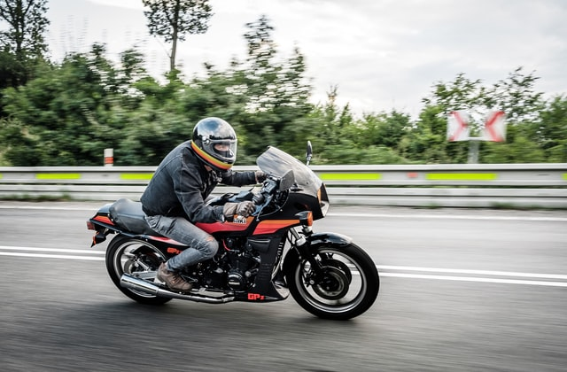

10 reasons to ride a motorcycle
We love riding our motorcycles, but did you know we also benefit a lot from doing what we love?
Why bother riding a motorcycle? Whether it is from passion or just in form of practicality, motocycle society is growing and there are reasons for that, though, usually we do not need one to go on for a ride. This article would certainly help you if you need permission from your wife to buy a motorcycle, after all, she wants what is best for you,right?
If you are just getting into motorcycling, maybe you will be a little confused with all the models out there. No need to worry, we have all been there. Here is a list of the most common motorcycle types and their advantages and/or disadvantages, to help you take the right decision for youself!
1.IMPROVED HEALTH
Motorcycles and health are usually a bit hard to be used in the same sentence, fortunately, riding does actually affect our health. Just steering and moving around causes you to burn a few extra calories, or even put on some muscle. Riding also results in endorphins interact with your brain, leaveing you happier and calmer. A healthier mind means healthier body, right?
2. RIDING IS FREEDOM
When we are out there on the road, we are inevitably way closer to nature, compared to when in a car. We feel every rock or hole on the road, we smell everything, we feel the weather. There is nothing surrounding us like a prison cell. All these little things give us a sense of freedom, which then pushes all the unnecessary stuff on the side. We push through anxiety, problems at work, oncoming deadlines, giving our mind a rest.
3.MOTORCYCLES ARE COOL
Yes, motorcycles are cooler than cars. And they will always be. Its hard to guess if someone thinks you are cool on your bike just at looking at them. Certainly, most people wish to be in your shoes. They just do not have the balls.
Although carrying your gear everywhere is such a drag sometimes, there are some benefits. Whenever you enter a store, restaurant, etc., with your helmet under arm, you immediately get a few extra points.

4.MOTORCYCLE SOCIETY
If you have ever noticed, all two-wheelers have a thing among them. Whenever we see a "colleague" with a bike, we wave at each other as a greeting.
Believe me, the first time someone waves at you, yoi feel so special. And you are. You had the courage to get involved in motorcycling and not be another sheep from the crowd. Motorcyclists also tend to be the coolest guys ever. We feel like we belong to a big family that sets us apart from the rest.
5. EASY PARKING SPOTS
With the growing number of cars driven every year, parking is a neverending problem. For car drivers, not us (ha-ha!). Since motorcycles are tinier, we can park almost everywhere, next to cars or between them, we will always find a spot in the next 20 yards. Some parking lots have cool features like areas designated only for motorcycles. Also, since we do not take much space, most parking lots even let us park there for free!
6. SAVING MONEY AT THE PUMP STATION
Bikes tend to burn less fuel, due to the fact that they are lightweight compared to cars. This is what makes them some serious money savers, not to mention the ride is way more exciting. No wonder more and more people decide to use a motorcycle to get to work, without staying in traffic for hours, burning fuel for nothing. This leads us to our next point.
7. BYPASSING TRAFFIC
This reason itself is enough for a lot of car drivers to switch to a two-wheeled machine. Living in a big city makes being caught in a traffic jam part of your daily routine, often making you feel irritated and often doing irresponsible maneuvres. Owning a motorcycle saves you the pain of sitting there for hours, or leaving home early, so that you will not be late for work.
Make sure to first check if filtering (going between cars) is allowed in your country. In some countries it is legal, in others it is not, after all, we do not want to get a ticket for that. Also keep in mind filtering is quite dangerous, some cars do not stop in the middle of the lane, leaving you with less space, sometimes impossible to go through. Another thing worth mentioning is always being ready for drivers or passengers opening their doors.
8. ONE OF A KIND
When manufactured cars usually come out with only a few colors, usually pretty boring. On the other hand, motorcycles come out of the manufacturing company covered in all kinds of stickers or extraordinary paint in different layers. You will probably never see two bikes that are the same. Since it is easier to change parts on a motorcycle, bikers do all kinds of DIY mods on their bikes. From louder exhausts, LED lights and bigger tyres, to simple stickers. It is not rarely seen even combining exterior parts from different motorcycles into one. Overall, owning a motorcycle is the purest form of authencity.
9. LESS HARM TO THE ENVIRONMENT
If you have read some of our previous articles, you already know that when we are driving a motorcycle, we are closely connected to nature, feeling all the smells, the wind, the temperature. We, as bikers, regularly go for some long rides out in the beautiful areas, looking for our next adventure with our dear two-wheeled buddy. Whenever you become a motorcyclist, you undoubtebly start appreciating more the colorful world surrounding you.
As pollution related problems are emerging more and more every ear, this could also be a reason to switch vehicles. Motorcycles use less fuel, so they pollute less. Manufacturing them is also mostly human made - less pollution. If you want to make the planet a better place to live, this is a small step in that direction.
10. LEARNING TO FIX AND TAKE CARE OF THINGS
As we said, bikes are easier to tinker with. You cannot go to the motorcycle service everytime something happens and sooner or later you start fixing it youself. Most bikers, for example, change their oil and filters in the yard at home. We tend to treat our motorcycles like they are our own babies. We wash them, we buy them gifts, overall we spoil them. A lot!